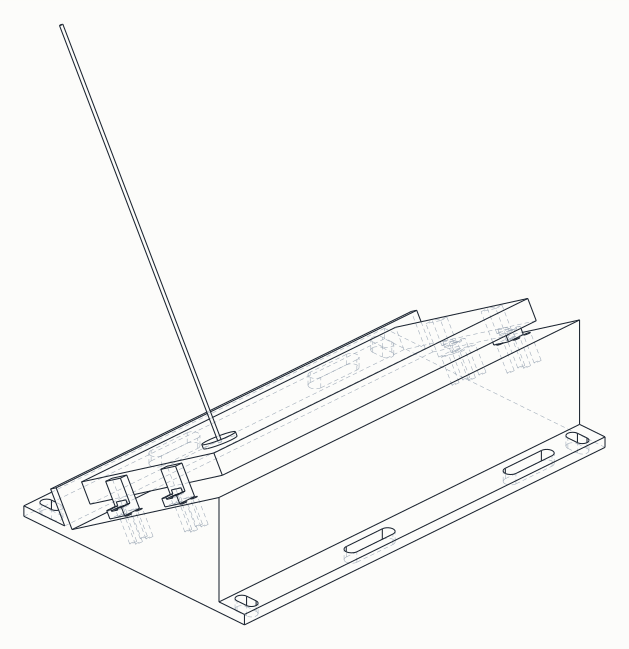

Telefonhalter 60°
Neigungshalter für das Smartphone auf dem KF10 MAX. Die Rückkamera schaut mit {{TILT}}° Elevation feldeinwärts, wie es die Simulation für den Ackermann-MVP verlangt. Starrer Keil, EVA-gedämpft, Telefon werkzeuglos entnehmbar; Anbindung ans Auto über eine Adapterplatte auf den Karosserie-Posts.
- Kamera-Elevation
- {{TILT}}°Sim-Parameter tilt
- Rampe zur Basis
- {{ALPHA}}°= 90° − tilt
- Grundfläche
- {{BASEX}} × {{BASEY}}mm, Höhe {{RZ}}
- Objektiv über Basis
- ≈ {{CAMH}}mm, Beispielgerät
- Telefon-Oberkante
- ≈ {{PHTOP}}mm über Basis
Blatt erzeugt aus drawing.py; dieselben Parameter stehen in halter-60.scad. Druckversion: halter-60.pdf (A3, 1:1).
Blau = Fremdteile (Telefon, Strap), Orange = optische Achse und Sichtkegel, Strichpunkt = Mittel- und Schnittlinien.
Was das Blatt festlegt
- Lage des Telefons: Display auf der 5-mm-EVA-Auflage, Rückseite mit Kamera nach vorn-oben. Lange Seite quer zum Fahrzeug, Kameramodul auf der Fahrzeug-linken Seite (+X).
- Winkel: Rampe {{ALPHA}}° zur Basis ergibt die geforderte Kamera-Elevation von {{TILT}}°. Der Sichtkegel (vFOV 53°) reicht von {{FOVLO}}° bis {{FOVHI}}° Elevation; darunter liegen nur Deck und Lippe, beides außerhalb des Bildes.
- Halten: Lippe 15 mm senkrecht zur Rampe fängt das Telefon unten, zwei Klett-Straps über die Rückseite halten es gegen Abheben und gegen das Hochrutschen beim Beschleunigen, Anschlagklötze auf einer M3-Lochreihe nehmen die Querkräfte. Strap-Enden durch die Schlitze fädeln und auf sich selbst zurückkletten, ein Durchlauf unter der Basis ist nicht nötig.
- Lochreihe (Rev B): Pitch 2,5 bei Ø 2,5 hätte null Wand zwischen den Bohrungen gelassen. Jede zweite Bohrung liegt jetzt 6 mm weiter oben auf der Rampe (Zickzack), die Wand zwischen Nachbarn ist 2,5 mm. Die Verstellung bleibt 2,5 mm je Seite.
- Anbindung: vier M4-Langlöcher 4,5 × 9 auf 156 × 92. Sie gehen nicht mehr ins Deck, sondern in die Adapterplatte (Abschnitt Montage). Gummidämpfer optional; erste Fahrt hart verschraubt.
Warum ein starrer Keil
Die Simulation macht die Halterung zum ersten Engpass vor jeder Detektor-Kennzahl: flach 51 %, mit 60° Neigung 99 % Decke bei perfektem Detektor. Ein Gelenk oder Kugelkopf würde den Winkel verstellbar machen, aber Spiel in die Kamerapose bringen, die ARKit und der gewichtete Trajektorien-Fit auswerten. Der Winkel ist deshalb ein Druckparameter, kein Stellglied: für den holonomen Zielwert 75° dieselbe Datei mit tilt = 75 drucken.
Der Keil ist im Modell massiv; Gewicht regelt der Slicer über Infill. Die geschätzten 120–160 g liegen tief auf dem Deck und senken wie das Telefon selbst den Schwerpunkt.
Offene Geometrie-Checks
- Netzboden: Die Telefon-Oberkante liegt ≈ {{PHTOP}} mm über der Basis, plus 3 mm Dämpfer. Das Systemkonzept rechnet mit Netzboden 45 mm über Deck. Ringhöhe oder Netztiefe müssen nachziehen, sonst schlägt das Netz auf die Kamerakante.
- Aufmaß der Stifte: Die Adapterplatte braucht Lage, Durchmesser und Querloch-Höhe der vier Karosserie-Stifte sowie die Bügelhöhen (Blatt
aufmass-kf10.pdf, Abschnitt Montage). Bis die Werte da sind, bleibtPOSTS = Noneund das Skript erzeugt keinen Adapter. - RC-Plattform als Prüfmodell: Der KF10 MAX kommt als Hüllkörper ins FreeCAD-Dokument (Chassis bis zum höchsten Hindernis, vier Bügelenden mit Stiften, Reifen voll eingefedert, Boden), Platzhalter
CHASSISim Skript. Damit prüft das Skript vor dem Druck Freigang zwischen Halter plus Adapter und Chassis oder Reifen, rechnet Füße und Buchsen der Platte und die Objektivhöhe über Boden. - Testgerät: Gezeichnet ist das iPhone 16 mit {{PHONE}} ohne Hülle, im Protokoll Abschnitt 1 eingetragen. Mit Hülle wächst die Dicke auf etwa 10 mm, die Lippe von 15 mm deckt das ab. Am Gerät nachmessen: Anschlag-Position (Bohrung 78,5) und Kameraposition.
- Tasten an der Lippe: Mit dem Display nach unten liegt die Lautstärke- und Action-Tastenseite an der Lippe. 2 mm EVA auf die Lippeninnenseite kleben, damit Strap-Zug und Beschleunigung keine Taste drücken; beim Passtest prüfen.
- Randtreffer (T4e): Abnahme mit 20 gezielten Randtreffern aus 4 m bei montiertem Telefon, dazu Probefahrt mit Blick auf Verwacklung im Kamerabild.
Montage am KF10 MAX
Der KF10 MAX ist der KFPLAN KF10, ein 1:10-Monster-Truck: 365 × 288 × 153 mm, 1,5 kg, Nylon-Wanne, Akkufach hinten mit Klettband, Karosserie auf vier kurzen Stiften mit Kugelkopf an den Enden eines Querbügels über jedem Dämpferturm, je ein Querloch für den Original-Clip (Fotos vom Auto, keine Lochreihe, Höhe nicht verstellbar). Ein ebenes Deck von 170 × 104 mm gibt es dort nicht, die direkte Deckverschraubung aus Rev A entfällt. Ein 3D-Modell des Autos ist nicht auffindbar, weder vom Hersteller noch auf Printables, Thingiverse oder GrabCAD.
- Konzept: Eine Adapterplatte ersetzt die Karosserie. Sie wird wie diese über die vier Stifte gesteckt, liegt auf den Bügelenden und wird von den Original-Clips gehalten; oben trägt sie das Bohrbild 156 × 92 für den Halter. Kein Bohren am Chassis, vier Clips zum Abnehmen für den Akkuwechsel, und die Bügel sind für Crash-Lasten ausgelegt. Zwei Details rechnet das Skript aus dem Aufmaß: Buchsen um die Stifte bis knapp unter das Querloch, damit der Clip die Platte klemmt, und Füße je Achse, wenn die Bügel vorn und hinten ungleich hoch sind oder Dämpferkappen höher liegen (Mindestluft 8 mm). Die Fangkorb-Streben können auf dieselbe Platte.
- Höhe: Das Objektiv landet damit etwa 0,10 bis 0,15 m über dem Boden. Genau dort rechnet die Simulation seit dem Nachtrag zur Kamerahöhe, ein Mast ist nicht vorgesehen. Der Schwerpunkt steigt um wenige Millimeter; mit Füßen etwas mehr, das Skript gibt die Objektivhöhe aus.
- Aufmaß am Auto: Blatt
aufmass-kf10.pdf(4 × A4: Draufsicht, Seiten-/Vorderansicht mit Stift-Detail, Messblatt, Papiermaßstab) zeigt jedes Maß ①…⑰ am schematischen KF10 MAX. Pflicht für den Adapter: Stiftabstände, Stift-Durchmesser, Querloch-Höhe und Stifthöhe, Bügelhöhen vorn und hinten, höchster Punkt dazwischen. Später für Hüllkörper und Simulation: Reifenmaße, Spur, Radstand, Bodenfreiheit normal und eingedrückt. Die Werte gehen alsPOSTSundCHASSISinhalter60_freecad.py, der Adapter kommt dann als STL mit heraus, Füße, Buchsen, Freigang und Objektivhöhe werden gerechnet. - Druckgröße: Ist der Abstand der Stift-Paare größer als etwa 210 mm, passt die Platte nicht auf das 220-mm-Bett. Dann
split = True: zwei Hälften mit Trennfuge unter dem Halter, der Halter verschraubt beide (dann ohne Dämpfer). Fallback ohne Druck: 4-mm-Sperrholz oder Alu, nach der Draufsicht gebohrt. - Statt CAD des Autos: Für den Adapter reichen die Maße des Aufmaßblatts. Wer mehr will, scannt die Wanne per Photogrammetrie mit dem iPhone (Polycam, KIRI Engine oder RealityScan) und legt das Netz als Referenz in FreeCAD; Maßstab über eine bekannte Länge kalibrieren.
3D-Modell und Druck

- Halter: 170 × 104 × 44 mm, 310 cm³ Hüllvolumen, etwa 127 g PLA bei 15 % Infill und rund 10 h auf dem Ender-3 Pro. Basis auf dem Bett, keine Stützen: die Lippe hängt 30° über, die M3-Bohrungen stehen 30° schräg, beides druckt frei. Brim gegen Verzug der großen Grundfläche, 3 bis 4 Wände, 0,2 mm Schicht. PETG für den Betrieb, PLA für den ersten Passtest reicht.
- Anschlag: vier Stück, je unter 1 g, Fuß auf dem Bett, 30 % Infill.
- Prüfungen im Skript: Telefon-Phantom, Anschläge und optische Achse schneiden den Halter nicht, Spiel der Anschlagflächen 0,0 mm bei Bohrung 78,5, beide Netze wasserdicht und mannigfaltig, Bettmaß 220 × 220 eingehalten.
Dateien und Weiterverarbeitung
halter-60.htmldieses Blatt mit Erläuterunghalter-60.svg/.pdfeigenständiges Zeichnungsblatt, A3 quer, 1:1halter60_freecad.pyFreeCAD-Skript: baut Halter, Anschlag, Adapter und Baugruppe, prüft Kollisionen, schreibt FCStd, STL und Isometriehalter-60.FCStdFreeCAD-Dokument zum Ansehen und Messen (Holder, Stop, Gruppe Assembly mit Telefon-Phantom)halter-60-holder.stl/-stop.stlDruckdateien für Cura, Halter 1×, Anschlag 4×halter-60-iso.svgIsometrie der Baugruppe, aus dem Skripthalter-60.scaddasselbe Modell in OpenSCAD (nicht installiert, Referenz)drawing.pyGenerator für SVG und HTML, nur Standardbibliothek
/Applications/FreeCAD.app/Contents/Resources/bin/freecadcmd halter60_freecad.py python3 drawing.py rsvg-convert -f pdf -o halter-60.pdf halter-60.svg
Parameter nur an einer Stelle ändern (identischer Block in drawing.py, halter60_freecad.py, halter-60.scad), dann beide Generatoren laufen lassen. In der FreeCAD-Oberfläche: Makro › Makros… › halter60_freecad.py ausführen, das Dokument öffnet sich mit Baugruppe.